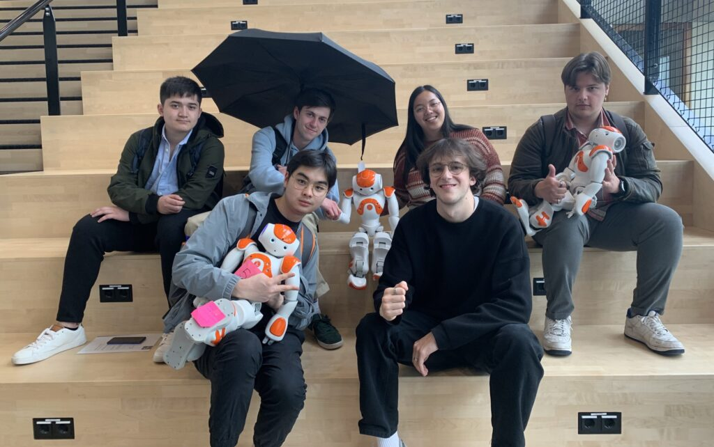

#
Introduction
We are 6 applied computer science students from Howest Bruges and for our International Project course, we needed to take part in an IT centered project in a foreign country. Out of the entire list of possibilities, we chose to take part in an IT project week centered around the theme “Will humans become obselete?”, a question that arises when thinking about the development of robotics and AI. This was hosted by Fontys, school for ICT in Eindhoven. In this blog. In this blog, we as a group will share our day-to-day experience from this project with you.
Sunday
On a beautiful morning we met each other at the train station in Gent to depart with the bus to Eindhoven. We had already ordered our tickets in advance on the Flixbus website, so we were packed and ready to go. At 20 past nine the bus left, and we had a good trip.
Once we arrived at noon, we figured out the way to the hotel pretty quickly and we were able to check-in immediately. Since we were staying in a 4-star hotel, the rooms were chic and very neat.
As hungry as a bear we went searching for food, luckily the street next to the hotel had plenty of restaurants and fast-food options. What caught our eye immediately were the typically Dutch “snack walls”, basically a vending machine with deep fried snacks in it. We ended up getting a snack there and later we had a delicious bubble tea in a cosy sweetshop just across from the wall.
At four ‘o clock, we met the people from Fontys in the hotel, they gave us some information about the project and the schedule for the week. There we also got to know some fellow Belgians.
We were then divided into groups and the Buddy students from Fontys gave us a really sweet welcome tour through the city. They made the tour more like a treasure hunt, we had to take photos with our group at various locations throughout the city. What struck us immediately were the public transportation options, there were electric mopeds and bicycles everywhere, which came in handy later on during our stay. The city was very clean and also had a lot of greenery and spectacular historical buildings such as old churches.
After the tour we went to grab some food with the other students. We enjoyed some delicious chicken wings at the KFC and had a drink at a local café, a friendly Danish student joined us. When our drinks were finished, we headed for the hotel and relaxed in our rooms after our exhausting trip.
Monday
Monday we woke up with a hearty breakfast provided by the Crown staff, afterwards we headed to the campus. After we arrived we had a short lecture about robotics: “Futuring”, this was given by Eric Slaats, who is a strong believer that robots will achieve great things in the very near future.
We also had a short lecture about cultural awareness, which made us realise there are a lot of small differences between cultures, which could lead to big misunderstandings. Luckily the whole group consisted of only Belgian people. Half of them spoke Dutch, while the other half spoke french. After these lectures we also had a small lecture about concepting, which basically taught us: if you have an idea, just go ahead and try it and don’t immediately get too technical.
For lunch we had a Dutch buffet, which consisted of pretty basic things, like “rozijnenbrood” or just sandwiches. When we were done eating our meals we actually started our project. We began by dividing into groups of 4, where everyone started brainstorming about ideas on how to better society and help humans using the NAO robots.
Afterwards we went to the campus bar, where we exchanged some local sweets between the students. Funnily enough all students present were Belgian, so everyone had their fair share of chocolate. Now we were free to do some exploring. Sunday we saw a place where you could eat pokébowls and because we didn’t want to eat unhealthy food all week long, we decided to go and enjoy one together. They turned out to be amazing.
Later that evening before we went to bed, we decided to go to Gamestate, which was an arcade that was located right in front of our hotel. We had a great time and a lot of laughs together.
Tuesday
The second time we woke up in Eindhoven, we truly realised that there was no time to sleep in. First thing in the morning on the Fontys campus was a lecture by Mr Shelangi at 9.00am. So we quickly freshened up, got a quick bite at the delicious breakfast buffet and took an electric scooter to campus.
Today we truly got hands-on experience with the actual Nao humanoid robots. Mikaeli gave us a small description and contextual explanation. After he told us which software to use, we all got together with the group we formed the day before and started our trial and error process of programming an achievable demonstration for our concept.
The four concepts that started development this day:
- An emotional support buddy bot
- A work-out buddy bot
- A gaming buddy bot (rock / paper / scissors)
- A dog poop collector bot
After our working session, fontys again offered us some lunch bags with tasty and healthy sandwiches.
In the afternoon we got what turned out to be the most interesting lecture of the entire week. A speaker named Michael Diederich from California came to speak to us about improvisation, presentation skills and audience engagement strategies. It was a very straightforward and interactive plenary. He definitely knew his field of expertise and brought his message across very naturally. No powerpoint presentation needed.
When the workday was over on campus we quickly headed to the hotel to get a quick rest and freshen up because we had a dinner planned for us at 6:00pm. We were expected at Café De Spijker in the centre of Eindhoven. We got to eat a three course meal, needless to say we were already stuffed before the dessert arrived but we enjoyed every bite of it!
Wednesday
As every other day, this day we went to Fontys again from 9 till 16 o’clock. Fontys is a university of applied sciences. Their slogan is “For Society”, which means they want their students to really be involved in making society better. The building we went to everyday is very modern. It had a large public hall with a staircase going to the top level and with a small shop at the bottom of the stairs. On the second to third floor was a separate staircase to sit on. This was where all our lectures were held. This was not the most comfortable place to get a lecture because it was very hard to sit on. We could not hear the person in front very well because the voice would just travel in the hall. Also, every time a student took the metal stairs the noise would interrupt the lecturer. Some of the local students could follow along with the lecture but this didn’t bother us anyone.
Our working sessions were in a different room. This room had four 3d-printers and also two laser cutters. It looked like a workshop-place with all necessary tools where all students from Fontys could go to work on their projects. We actually didn’t enjoy working in this place because the machines were making a lot of noise and the room was open for all students. So sometimes a random student would come in and work on the machines. Because of the noise some of the robots didn’t hear their commands correctly which made us lose time while working on our projects.
In the afternoon we got to see Mikaeil Shagelani Lor again. He is an ICT lecturer at Fontys. He talked about Robocup. Unlike what most people thought, it wasn’t about the movie RoboCop. It was actually about a competition where groups of people program some robots to compete with each other by playing soccer. In fact, the goal of this competition is to make robots able to compete against humans and actually win by 2050. This competition has different leagues according to the type of robot. Previously Mikaeil also joined this competition for some years so he is experienced in working with the nao robots.
The rest of the day we got the time to work further on our project. Some of the groups were almost done already after today. Our full group exists of 16 Belgian students. Some of the other students were from Antwerp, the others from Brussels. It was not very challenging to work with other Belgian students because we live in the same society. But we did notice some differences in working attitude. The students in Brussels were a lot more motivated to deliver a fully functional project. Not to say we weren’t motivated, but clearly, they had more depending on it compared to us. During the working sessions a lecturer from the school in Brussels was always present. Maybe this also had something to do with it. This lecturer was the only one coaching all the working sessions, while it also was his first time working with the nao robots. He was very engaged with all the projects.
While working with the nao robots we also noticed that the robot had a little more difficulty to understand the French speaking students. This was probably because their French accent. Unlike the robots we had no problem understanding the students from Brussels. Their English was very good.
Working with the nao robots was fairly easy. The robot itself could move all it’s limbs separately and had a standard life-like motion while waiting for commands. Its hardware exists of seven touch sensors, 4 microphones and speakers. It also already has speech recognition in 20 languages and two 2D cameras.
To program the robot, we used a platform called Choregraphe. It was easy and quite intuitive to work with. This type of robot already has a lot of standard working functions which made it easy to program. You could add your own motions too, but this took some time to get used to.
In the evening there was another activity planned. This day the activity was a student night with some of the buddies from Fontys and with some of the international students who were also at Fontys but in another project. We got 2 free drinks in Café Sands which was in Stratumseind, the best street to go out with friends. They played different music than they usually would, especially for us. We got to watch some football because PSV (the local team from Eindhoven) played. It was really fun to see how engaged the supporters were. Then we danced and afterwards we went to a bar where we could play pool. It was getting pretty late so we had to go to the hotel so we could still get some sleep.
Thursday
For a change, this day we didn’t have to wake up early for school, something fun was planned for us. Included in our project price was a tour at the Philips football stadium, home of Eindhoven’s PSV team. We got to take a look behind the scenes of the usual stadium experience. The dressing rooms, the VIP lounges and even the actual pitch, where they had played the night before, were open for us to enter. When the guided tour was over, we also got to enter the PSV museum with loads of memorabilia. Some things even were 100+ years old. A very fun and impressive activity to lighten up all the school hours. Afterwards there were even some playstations set up for us to play some games of FIFA22 together, needless to say we did not miss out on that opportunity.
Our free time unfortunately ended quickly as we immediately rushed back to campus to continue our project work on the Nao robots. Some of our group members were already present, since they rented an electric bike to get there a bit faster. Luckily we finished up pretty quickly and made our way to the roof terrace for a lunch break. The lecture today was a bit more interactive than usual, the lecturer gave us 2 mathematical challenges to find the shortest way from A to B with a Nao robot.
For the second workshop of the day, we left a bit early, because our prototype was basically complete and rewarded ourselves with a short power nap.
We finished our day off with an international quiz in the city centre, but chose to call it a day after barely being able to answer most of the questions. The lighthearted school level quiz questions we expected turned out to be a serious quiz-club gathering with extremely specific questions.
Friday
After a good night’s rest, we started packing our bags again and left the hotel rooms for the last time. We checked out of the hotel and had a fine breakfast before we headed to the Fontys university using the electric bikes.
We prepared the robots and our powerpoints for the presentations. Everyone did their talk and demonstration before the final jury. They asked some questions about our social interactions and the possible futures for our projects. Afterwards, we had lunch while the jury members graded our projects. The lunch was made up of either some kind of bread filled with either cheese or ground meat or a soft sandwich with a sausage inside.
After lunch, Mikaeli came to announce the winner of the international project. Two groups shared first place (the emotional support buddy bot and the work-out buddy bot) and the other two groups shared second place (the game buddy bot and the dog poop collecting bot). Everyone received a certificate for participating in the international project and the winners received a special umbrella from Fontys as a winning trophy.
After saying goodbye to everyone in Fontys, we walked around Eindhoven and did some souvenir shopping. For the last time, we got something from the snack wall and bought some more snacks in the Albert Hein for the trip before we went back to the hotel to collect our luggage.
After a very fun week of good weather, coding, meeting new people, enjoying food and having lots of laughs, it was safe to say that we all got some well deserved rest. The interesting lectures and working with the Nao bots isn’t something we will soon forget. During this trip, all six of us got to know eachother a little more and enjoyed eachother’s company very much.
After saying goodbye to everyone in Fontys, we walked around Eindhoven and did some souvenir shopping. For the last time, we got something from the snack wall and bought some more snacks in the Albert Hein for the trip before we went back to the hotel to collect our luggage.
After a very fun week of good weather, coding, meeting new people, enjoying food and having lots of laughs, it was safe to say that we all got some well deserved rest. The interesting lectures and working with the Nao bots isn’t something we will soon forget. During this trip, all six of us got to know eachother a little more and enjoyed eachother’s company very much.